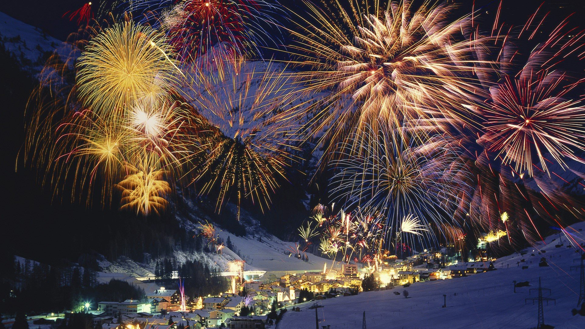
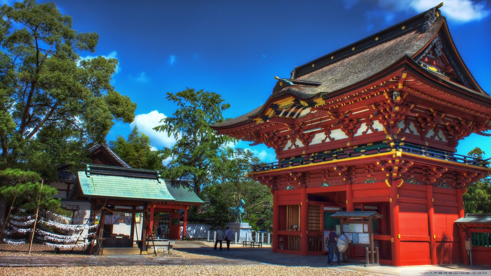
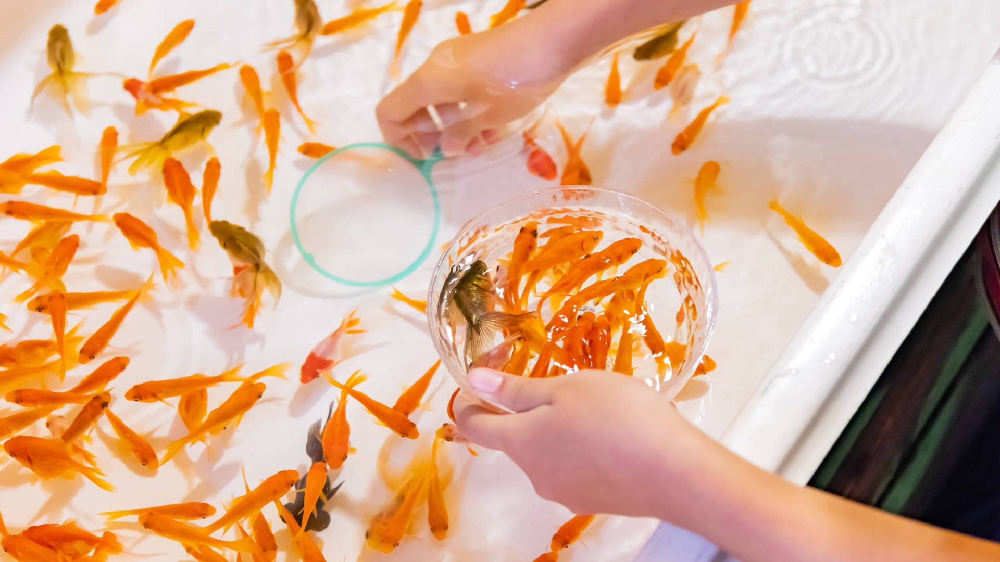
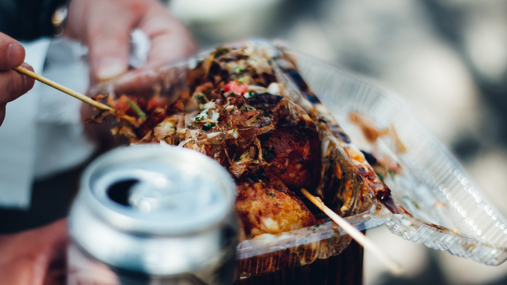

The original purpose of the Japanese cultural festival is to thank God. The etymology of the word "Matsuri" is also "enshrined."
Matsuri refers to the comfort, prayer, show gratitude to the ritual of Nature, and it originates from the indigenous God (Shamanism), Shinto, or Buddhism.
The concept of "Hare" and "Ke" is essential in understanding the feelings for the Japanese festival. "Hare" is "non-daily" and "Ke" is "every day".
The festival is "Hare," and it is meant to reset "Ke" by conducting it gorgeously.
The Japanese look forward to the opportunity of this "hare," and it is the source of vitality to live the daily life of "Ke."
There are also new things that are unrelated to God. For example, festivals for regional revitalization, or Seasonal Festivals which derived from the season such as
Snow Festival and Cherry Blossom Festival, or Era Festivals or Parades which for celebrating great historical victories, or festivals of foreign origin typified by Samba
Carnival and Spring Festival.
Throughout the Omatsuri Festival Event, you can enjoy yourself with various activities that may fill your excitement even hunger.
Such activities like:
| Fireworks Show | Learn Shrine Praying Rituals |
|---|---|
|  |  |
| Watch magnificent fireworks show over the amazing horizon of the night blue sky |
Learn to pray at a traditional japanese shrine |
| Fireworks Show | Learn Shrine Praying Rituals |
|---|---|
|  |  |
| Watch magnificent fireworks show over the amazing horizon of the night blue sky | Learn to pray at a traditional japanese shrine |